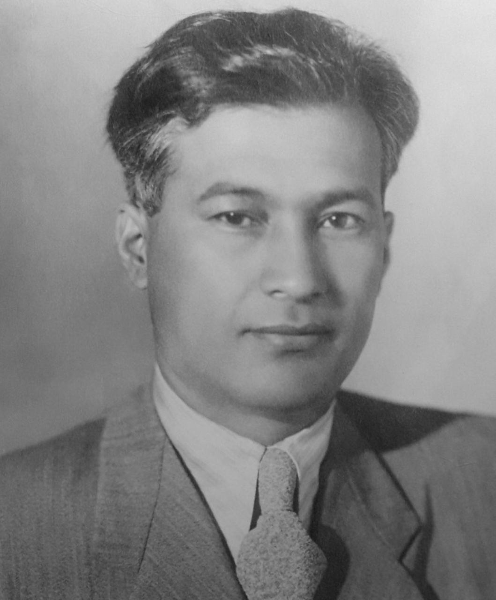

Хлопковое дело («Узбекское дело»): расследование 1980-х годов и его последствия
«Хлопковое дело», которое также называют «Узбекским делом», — крупное уголовное расследование советского времени о приписках хлопка и коррупции в хлопковом хозяйстве Узбекистана в 1980-х годах. Оно привело примерно к 800 уголовным делам и более чем 4 000 признанных виновными. Ниже его причины, масштаб и последствия изложены только по проверенным источникам.

«Хлопковое дело» (рус. Хлопковое дело), которое часто называют и «Узбекским делом», — это совокупность уголовных расследований последнего десятилетия Советского Союза о масштабных приписках хлопка и взяточничестве в хлопковом хозяйстве Узбекистана. Ниже причины дела, его масштаб, главные фигуры и последствия изложены только по проверенным историческим источникам.
Эпоха Рашидова
Шараф Рашидов занимал пост первого секретаря ЦК Компартии Узбекистана с марта 1959 года до своей смерти 31 октября 1983 года — руководя республикой почти четверть века. Именно его долгое правление позже рассматривается как период, в который расцвела коррупционная схема, известная как «Хлопковое дело».
«Приписки»: завышенный хлопок
В основе дела — «приписки», то есть завышение урожая хлопка, который фактически не был выращен. По данным источников, Узбекистан получал из центра миллиарды рублей за несуществующий хлопок; по одной из оценок, всего было получено четыре миллиарда рублей за хлопок, которого не было. Только в 1983 году было отчитано около 981 000 тонн хлопка как собранных, тогда как этого хлопка не существовало.
Начало расследования
Расследование с апреля 1983 года по поручению Генерального прокурора СССР вели два следователя — Тельман Гдлян и Николай Иванов. Они собирали доказательства взяточничества и приписок и заявляли, что в ряде мест были найдены крупные суммы наличных и ценности. Расследование совпало с эпохой перестройки и гласности Михаила Горбачёва.
Масштаб дела
По официальным данным, в рамках дела было возбуждено около 800 уголовных дел, и более 4 000 человек были признаны виновными по разным обвинениям. Среди обвиняемых были высокопоставленные чиновники: заместитель министра внутренних дел СССР, зять Леонида Брежнева Юрий Чурбанов; руководивший республикой после Рашидова Инамджан Усманходжаев (снят с должности в январе 1988 года); а также крупный хозяйственный руководитель Ахмаджан Адылов, который был арестован.
Политическое влияние
Гдлян и Иванов вскоре стали известны по всему СССР и называли дело коррупционной сетью, доходящей до Кремля. Исследователь Риккардо Куччолла отмечает, что это расследование центральных властей и развёрнутая вокруг него кампания были восприняты в Узбекистане как обвинение целого народа и усилили в узбекском обществе чувство обиды и унижения.
Завершение и реабилитация
К концу 1980-х годов само расследование и действия его следователей вызвали широкую критику. 25 декабря 1991 года президент Узбекистана Ислам Каримов помиловал заключённых по этому делу; многие обвиняемые позже были реабилитированы. Эта дата приходится на период, когда независимый Узбекистан начал самостоятельно оценивать собственную историю.